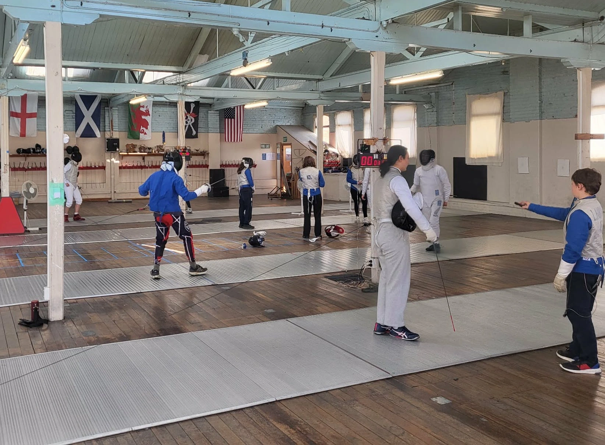
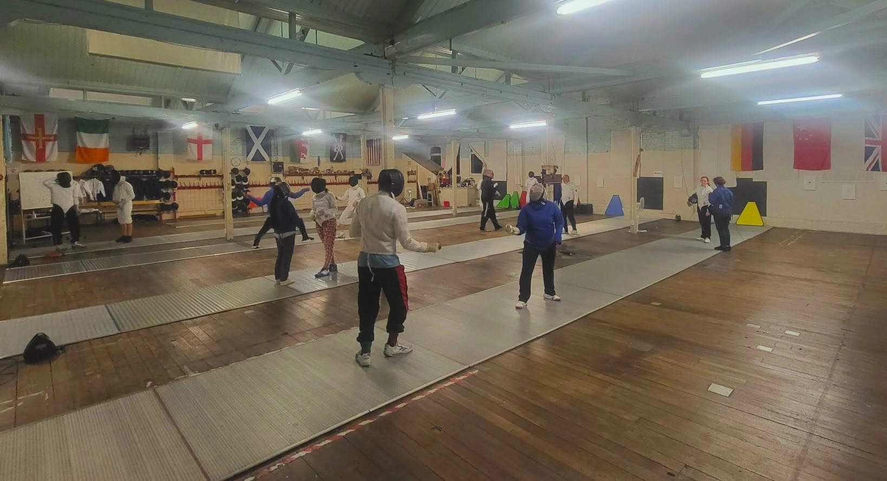
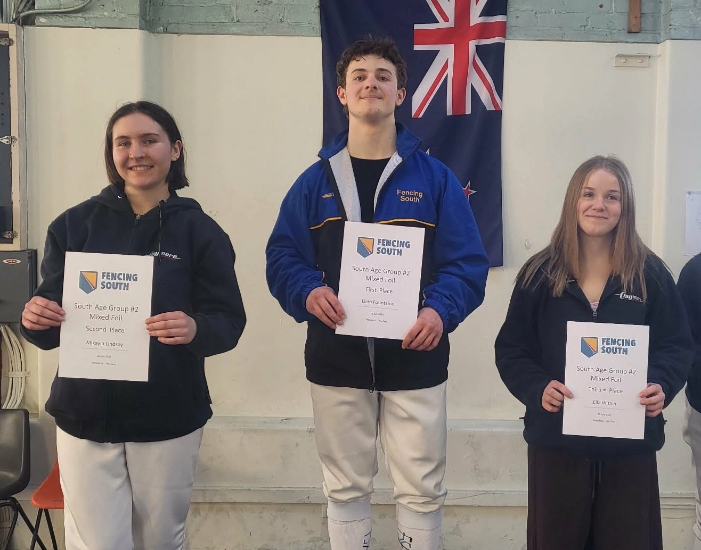
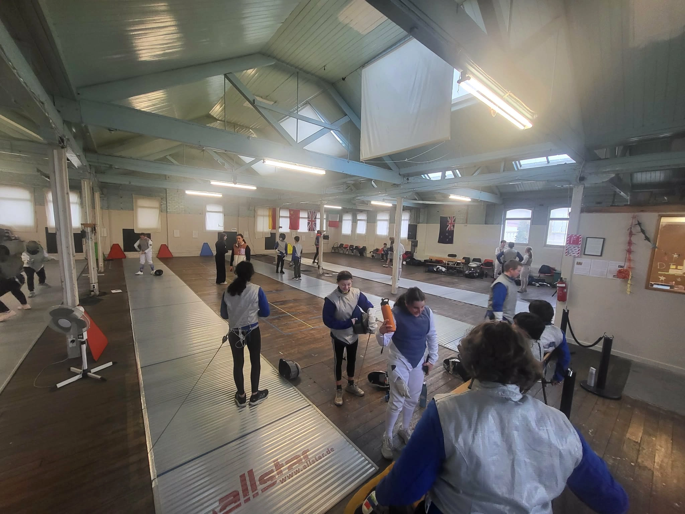

Can I do more fencing?
Yes, the answer is always yes. There are more classes and chances to fence others down at Claymoreswords club. There is a map at the bottom of the page with the location. This is where all classes are held. Lessons available include:
High school class: 6:30pm - 7:30pm Tuesday
High school boys class: 4:30pm - 5:30pm Wednesday
Beginners and main club class: 6:30pm - 7:30pm Wednesday
High school girls class: 4:40pm - 5:30pm Thursday
Open fencing is a time where the club is open for fencing others but there is no class. It is just fencing bouts. The end times tend to change depending on how many people there
Open fencing times:
Monday: 5:30pm - 7:30pm
Wednesday: 7:30pm - 8:30pm
Thursday: 5:30pm - 7:30pm
Saturday: 10:30am - 12:30am
Anyone can get involved with these classes.
Tournaments
At the end of each term, all the high school fencers are invited to and have fun at the end of term tournament at the Claymore swords club room (106 Bond Street, Central Dunedin). The type of tournament changes based on the term. This is so students get a slow introduction into what the competitive scene is like. The tournaments are a great opportunity for each student to see how far they have come, and put their practice into a real scenario. These tournaments also greatly improve their fencing skills and technical thinking even if they do not notice it during the tournament.
Term one is the poules tournament. These are fencing bouts that are up to 3 minutes or when a fencer reaches 5 points, whichever comes first. The fencers will fence everyone in their poule. In term two, it is a direct elimination (DEs) bout tournament. The DEs are bouts where there are 3 lots of 3 minutes. After each 3 minute section there is a 1 minute break, the winner is the first to get to 15 points, or whoever has the most points after the full 9 minutes. The third term introduces the team competitions. Fencing teams are made of 3 fencers and 1 sub. The 3 fencers from each team, will fence each of the three fencers from the opposing team. The bout ends when a team has reached 45 points, or until the 3 minutes are up on the ninth round. In competitive tournaments it is poule bouts then DEs and then if there is enough willing fencers a teams tournament will run after the individual events.

